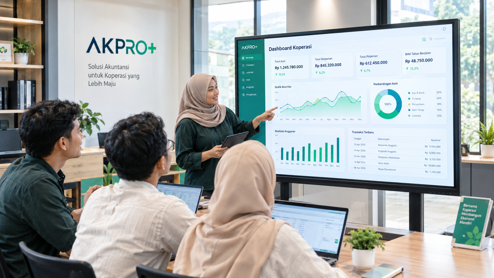
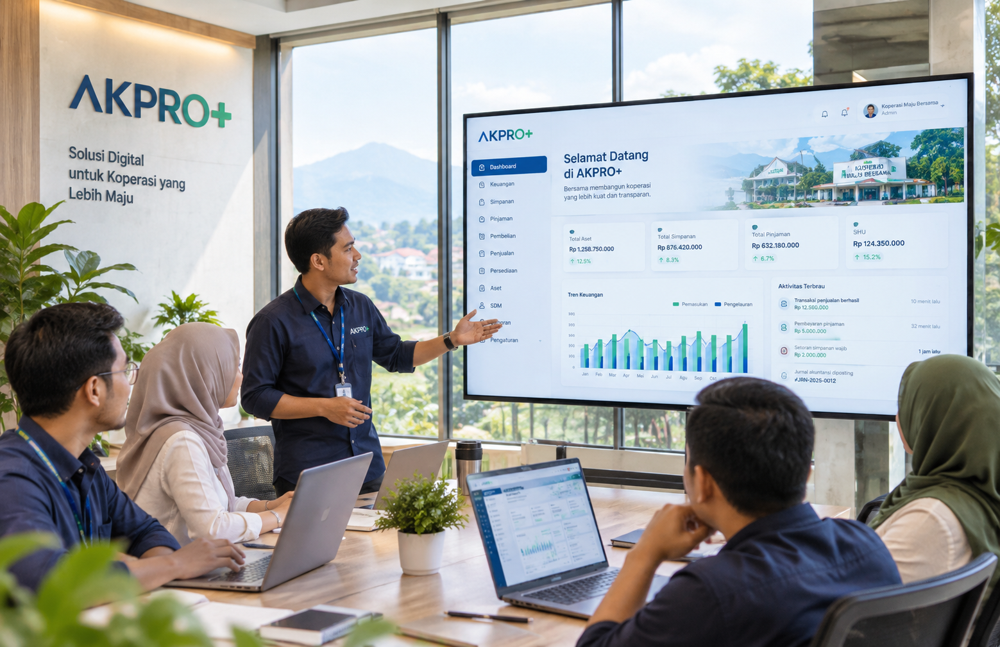

Catat kegiatan
Catat transaksi pada bagian yang sesuai dengan kegiatan berlangsung.
Kegiatan koperasiAlur yang tertata membantu menghubungkan kegiatan, pencatatan, dan laporan koperasi.
Lihat Fitur AKPRO+ ↗
Kegiatan koperasi menjadi awal proses yang mendukung pencatatan dan penyajian informasi sesuai kebutuhan.
Catat transaksi pada bagian yang sesuai dengan kegiatan berlangsung.
Kegiatan koperasiInformasi mengikuti aturan dan hubungan yang telah ditetapkan koperasi.
Proses tertataTransaksi mendukung pencatatan keuangan sesuai proses yang berlaku.
KeuanganInformasi yang tersusun membantu pemantauan kegiatan dan laporan koperasi.
Laporan koperasi
Alur yang saling terhubung membantu menjaga kesesuaian informasi antarkegiatan. Pengaturan usaha dan pencatatan keuangan dapat diselaraskan dengan kebijakan koperasi.
Tentang AKPRO+ ↗